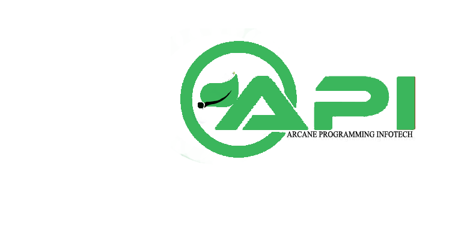

Arcane programming infotech an ISO 9001:2015 Certified company,Arcane programming infotech is the one and only place providing in-depth training on all latest technologies and Certifications
Arcane Programming infotech,management and Consultant includes either working IT professionls in IT industry. All of them are experienced in designing/development of software developement in their respective domains
The training is completely industry oriented .During the initial days of training itself, trainees will get the knowledge about of technologies and that they can get through any difficult interview or any job.